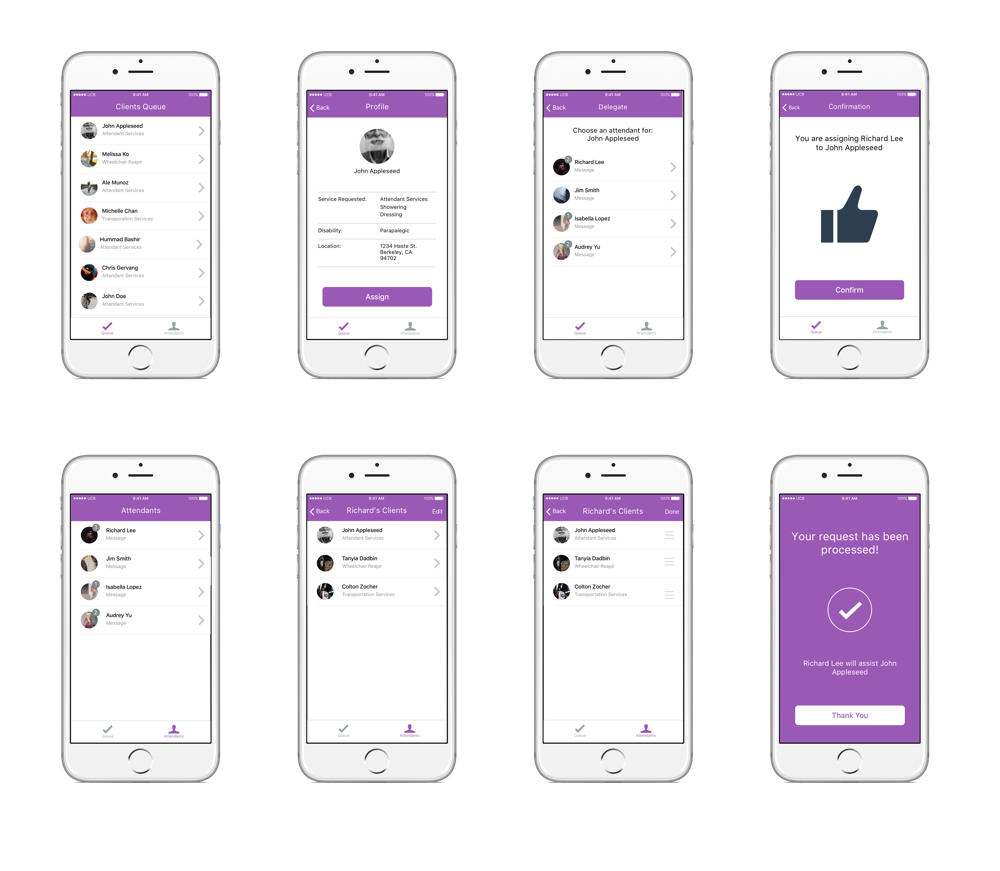

Easy Does It
Mobile

Intro
I participated in Berkeley Builds, a 24 hour designathon where students collaborate, develop, and innovate for nonprofits. The team consisted of myself and Alejandro Munoz, a good friend and iOS developer. We worked with Easy Does It to improve their user experience. Our project won 1st place.
Background
Easy Does It is an organization that provides assistance to the disabled people of Berkeley, CA. If a disabled person experiences an unforeseen crisis or temporary lapse in his or her own regular attendant care, that person can call Easy Does It for help at the time of need. The three main services they provide are: emergency attendant care services, wheelchair repair, and transportation services.
Role
UI/UX designer
Problem
With demand rising for Easy Does It’s invaluable services, this organization needs to move from disorganized procedures to implementing efficient processes. The current communication flow between the disabled person, dispatcher and attendant is incredibly inefficient.
Factors to Consider
Variety of Disabilities to Account For
People who have difficulty speaking or cannot talk at all, people who experienced a stroke cannot remember words, and people with physical disabilities.
Data Collection
What kind of data will this tool collect and how can Easy Does It consolidate and leverage this data?
Productivity
Handicapped people need to be tended to in a timely manner.
People who have difficulty speaking or cannot talk at all, people who experienced a stroke cannot remember words, and people with physical disabilities.
Data Collection
What kind of data will this tool collect and how can Easy Does It consolidate and leverage this data?
Productivity
Handicapped people need to be tended to in a timely manner.
What Easy Does It Was Looking For
Internal Component
A tool used for human resource purposes and staffing attendants.
Functionality of Product
A platform that simultaneously caters to people with disabilities and consolidates all of their services.
Accessibility
A platform where people with all kinds of disabilities can easily access services.
Communication
A platform where people can communicate to each other seamlessly.
A tool used for human resource purposes and staffing attendants.
Functionality of Product
A platform that simultaneously caters to people with disabilities and consolidates all of their services.
Accessibility
A platform where people with all kinds of disabilities can easily access services.
Communication
A platform where people can communicate to each other seamlessly.
User Research
I conducted four in-person interviews with staff members and users of Easy Does It’s services; this is what I discovered:
- There are various types of attendant services offered (showering, dressing, eating, toileting, getting medication, etc.).
- They have up to four attendants on duty at any given time.
- The emergency attendant care services is the most popular service.
- People are frustrated with the amount of time it takes to repair a wheelchair. The long wait comes from the round trip an attendant makes to inspect the damage, then travel to a local warehouse to retrieve the part, then travel back to the user.
- EasyDoesIt staff members wanted an internal system to keep track of customers.
Old User Flow
Mapping out the old user flow

When a disabled person calls the dispatcher to report their problem and their personal information (name, location, problem, etc.), the dispatcher either writes down some of the information on a Google doc or doesn’t write anything at all; this means that only a limited number of records are kept.
Since the dispatcher only keeps a limited amount of records, it is difficult to decide which attendant he or she should delegate to help a particular disabled person.
Depending on the disability, calling the dispatcher (voice dependent) may be a person’s only option to receive the care they need.
When the service needed from a disabled person is a wheelchair repair, the dispatcher will send off an attendant to inspect the damage. But after examining the damage, the attendant has to travel to a local warehouse to retrieve the necessary part and then travel back to the disabled person to perform the repair which is time time-wasting.
New User Flow
Taking into account what I had learned from the interviews, I came up with a solution to create three connected apps that would help everyone communicate more efficiently. One for the disabled person, one for the dispatcher, and one for the attendant. The apps would also enable Easy Does It workers to obtain helpful information about their users that could help dispatchers make more informed decisions. With an app, a disabled person can have the option of requesting for help without having to talk or they can immediately call for support. When deciding to choose apps as our solution, we were aware that not everyone may be able to hold a phone. But we do know that most people can still access and navigate through one. Half of the people I interviewed were in wheelchairs and could use their phones without a problem.


New User Flow
New Dispatcher and Attendant User Flow
Wireframes
Disabled Person

Dispatcher

Mockups
Disabled Person
After many interations I decided to have four very simple and big buttons on the home screen, one including an emergency call button. The emergency call buttom was included in the case of time sensitive emergencies where the user doesn't have time to go through the entire app and wants to speak with a dispatcher immediately.
The summary pages for each service were created in the case if users made a mistake in their request, they can go back before submitting a erroneous demand.
The photo sharing feature for the wheelchair repair service was implemented because of several requests for it. Interviewees expressed to me the burden of waiting for the attendant after they inspected the broken wheelchair. Viewing a photo of the wheelchair part would be particularly time efficient for the attendant because he or she could travel straight to a local warehouse to retrieve the part instead of traveling to the user first to view the broken part and then the warehouse.
Dispatcher
While designing the dispatcher’s app, we wanted to make sure they could easily queue each disabled person and edit the order of the queue quickly for time sensitive emergencies. After exploring many options, we decided to have two simple tabs—one for queuing disabled people and the other for keeping track of attendants and the people they've been assigned. From the queue, a dispatcher can read and learn about the client and then make an informed decision as to which attendant the disabled person will receive care from.
For the attendants tab we wanted to make sure there was a quick way for dispatchers to change the order of the queue for emergencies. If a dispatcher encounters a high priority client case, they can easily enter the attendants tab and then change the queue order.
Attendant
After taking care of a disabled person, they can easily alert the dispatcher they are done by swiping on the assisted user.
User Flow Maps
Disabled Person
Dispatcher

Attendant

Interactive Prototypes with Invision
Conclusion
If given more time to work on this project, I would have thought more deeply about the question, “What does an attendant need to be successful?”. My team primarily focused on the disabled people’s and dispatchers’ needs and wished we had more time to think about the attendants. I also would have explored how each user would be notified or updated throughout the process. Lastly, I would have tested out the usability of the apps.
Overall, this was one of my favorite projects I've ever been a part of. Working with Easy Does It was the most hands-on experience I've ever had as a designer. Interacting with real users and receiving their input while listening to their stories made the project especially special. I am incredibly thankful to have been able to develop a great idea with my teammate Alejandro and staff members of Easy Does It Nikki Brown and John Benson.

Overall, this was one of my favorite projects I've ever been a part of. Working with Easy Does It was the most hands-on experience I've ever had as a designer. Interacting with real users and receiving their input while listening to their stories made the project especially special. I am incredibly thankful to have been able to develop a great idea with my teammate Alejandro and staff members of Easy Does It Nikki Brown and John Benson.
Alejandro and I after winning 1st place at Berkeley Builds.
© 2015-2016 Michelle Chan.